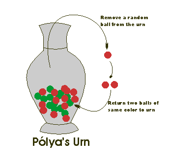

¿Puede el azar recordar?
Cómo los resultados del pasado pueden influir en las probabilidades futuras.
Idea principal
En muchos modelos de azar, como tirar una moneda o un dado, cada resultado es independiente de los anteriores. Pero ¿qué pasa cuando el pasado influye en las probabilidades del futuro?
La urna de Pólya es un modelo matemático que permite estudiar esta idea: un azar que tiene memoria.
El experimento comienza con una urna que contiene dos bolas: una negra y una blanca.
¿Cómo funciona el experimento?
1. Se extrae una bola al azar.
2. Se observa su color.
3. Se devuelve la bola a la urna y se agrega otra del mismo color.
De esta manera, la cantidad de bolas de cada color cambia con el tiempo. Cada extracción modifica la composición de la urna y, por lo tanto, las probabilidades de las extracciones siguientes.

01. El desafío
Observá los primeros 10 resultados y elegí qué color tendrá más bolas al llegar a las 500 extracciones.
02. Laboratorio de experimentos
Ahora que conocés el funcionamiento de la urna original, modificá algunas de sus condiciones y observá cómo cambian los resultados.
03. Estadísticas e historial
Analizá los resultados de las partidas y compará cómo evoluciona la proporción de bolas de cada color durante las 500 extracciones.
Evolución de los porcentajes
Cada línea representa la evolución de un intento. Podés pasar el cursor sobre la gráfica para destacar uno de ellos.